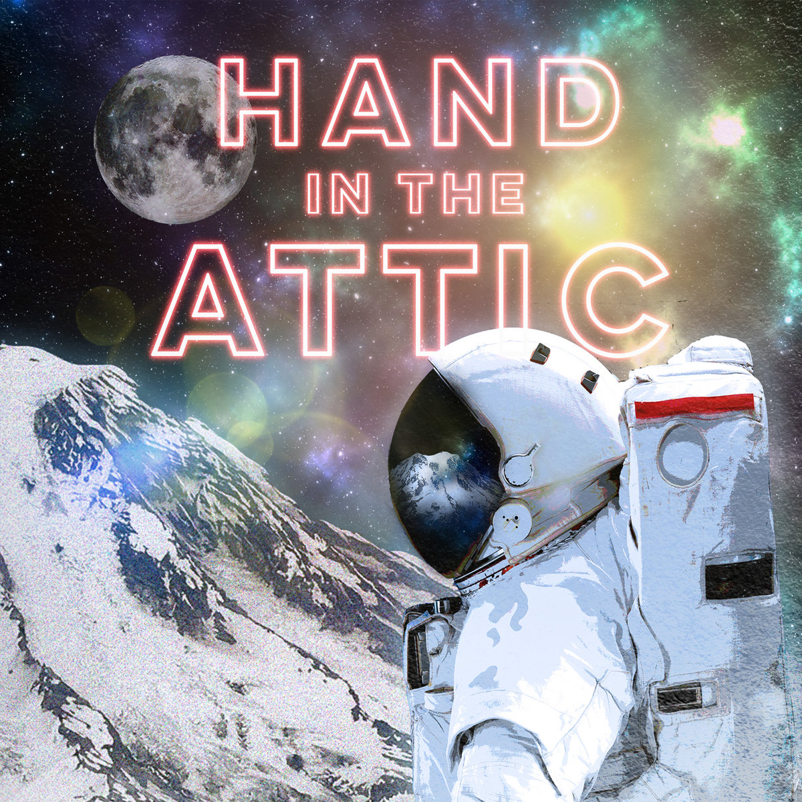
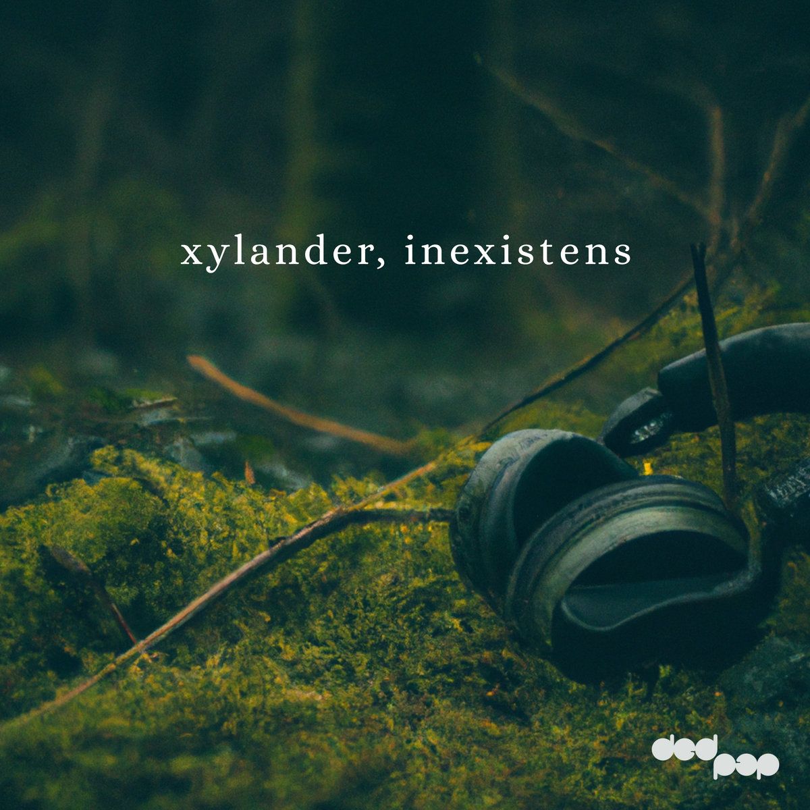
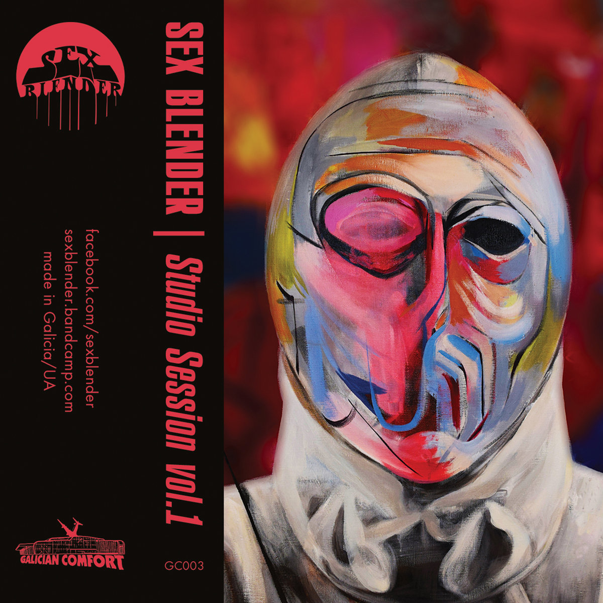

Bandcamp Friday is today, October 2nd, 2026. I always like to use these opportunities to both find/support Creative Commons music and thought I'd start sharing some of my picks.
If you're interested in CC music, be sure to checkout the tool I made for finding CC music on BC: cc-bc.

Melancholic lofi folk reminiscent of Grandaddy and Sparklehorse, Gone to the Mountain is a great accompaniment to a cup of tea on a rainy day.

Clicky, textural electronica that sometimes breaks into cinematic atmospheres or aggressive big beat. Inexistens reminds me of Four Tet and Amon Tobin but with a unique flare for transforming mid-track.

In a similar way to how tracks on Inexistens are constantly mutating, Studio Session I is always towing the line between metal, space rock, and psych rock. It can get chaotic at times, but it's at its best when it hits those long hypnotic jams.